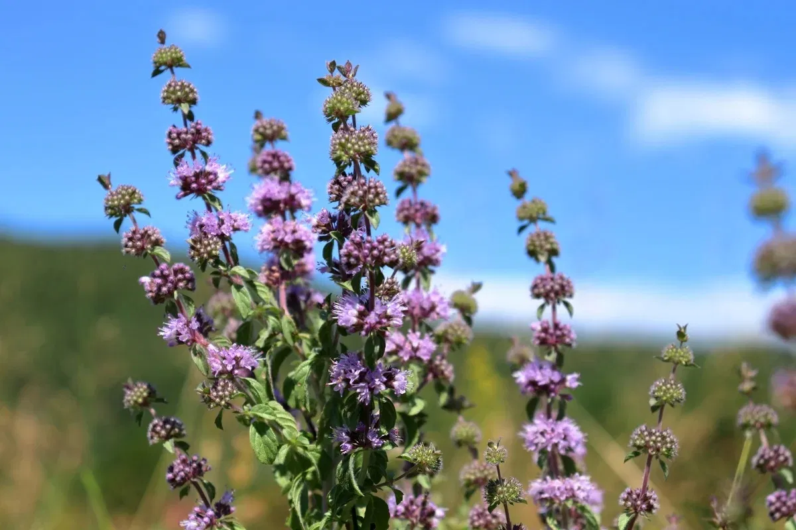

Ayuntamiento de Senés
JARDIN BOTANICO DE ESPECIES AUTOCTONAS DE SENES

Mentha pulegium

El poleo (Mentha pulegium) es una planta herbácea perenne aromática muy característica de zonas húmedas del ámbito mediterráneo. Se distingue por su intenso aroma y por su crecimiento rastrero o ligeramente erecto.
Presenta tallos delgados y ramificados, con hojas pequeñas, opuestas y de forma ovalada. Sus flores son pequeñas, de color rosado o violáceo, agrupadas en verticilos a lo largo del tallo, formando inflorescencias muy características.
El poleo se distribuye ampliamente por la región mediterránea, creciendo de forma natural en zonas húmedas como orillas de ríos, acequias y praderas húmedas. Prefiere suelos frescos y bien drenados.
En el entorno de Senés, puede encontrarse en zonas con presencia de agua, formando parte de la vegetación asociada a cursos y fuentes.
El poleo es una planta muy valorada por sus propiedades medicinales, especialmente por sus efectos digestivos, carminativos y relajantes. Tradicionalmente se ha utilizado en infusión para aliviar molestias estomacales.
También se le atribuyen propiedades antisépticas y expectorantes, formando parte del conocimiento popular sobre plantas aromáticas.
El poleo simboliza la frescura y la salud, debido a su aroma intenso y sus propiedades medicinales. Está asociado al bienestar y a la tradición de las infusiones naturales.
Su presencia en zonas húmedas refuerza su vínculo con la pureza y la vida.
En Senés, el poleo ha sido utilizado principalmente en infusión, siendo una de las plantas más conocidas para aliviar problemas digestivos, principalmente la pesadez de estómago.
Al ser una planta aromática se ponía en las casas para perfumarlas. El poleo criado en la sierra de Senés era más aromático.
El poleo florece principalmente en verano, produciendo pequeñas flores que atraen a insectos polinizadores.
El poleo es una de las plantas más utilizadas en la elaboración de infusiones tradicionales. Su aroma intenso lo hace fácilmente reconocible.
A lo largo del tiempo, ha sido una planta muy presente en la cultura popular mediterránea.